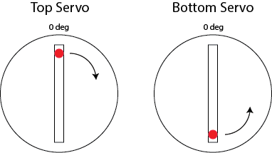
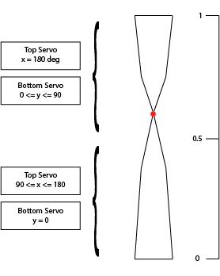

Blog
Read more about our personal journeys here.
Servo Control
By Bonnie Ishiguro
6 November 2015 11:15 AM
During Sprint 2, the software team worked on the task of changing the orientation of a ribbon by sweeping its servos to the appropriate positions. Although the sweeping motion itself is simple to implement, we ran into challenges while integrating our code with the mechanical system. We wrote our original sweeping algorithm under the assumption that the servos were all oriented the same way. In our first prototype, however, the servos on top were flipped 180 degrees around the y axis compared to the bottom servos, in addition to being upside down. This meant that the ranges of motion for a top servo and a bottom servo were offset by 180 degrees, and they could not rotate in the same direction.
To resolve this issue, we first flipped the bar that the bottom servos are mounted to align their ranges of motion. To account for the fact that the top and bottom servos are facing each other, we altered our calibration and sweeping functions. We now calibrate the bottom servos to the 0 degree position and rotate them clockwise while sweeping to a new position, and we calibrate the top servos to the 180 degree position and rotate them counterclockwise while sweeping.
After successfully completing servo sweeping, we started implementing the algorithm we worked out in Sprint 1 that translates a desired ribbon shape to top and bottom servo positions. This is illustrated in the following figure. The red dot indicates the position of the skinny part of the ribbon after it’s folded by its top and bottom servos, and the boxes on the left indicate the servo positions required to achieve a desired ribbon shape.
In parallel to servo control, we set up Python to Arduino communication over a serial port using a library called pyserial. We tested it by changing individual servo positions using Python. A next step for Spring 3 is to integrate this with our Arduino servo control code, so that we can write our sensor processing and ribbon pattern code in Python.
A challenge that we faced throughout the sprint was working with power sources for the servos. We originally powered the servos with the 5V pin on the Arduino. Our current prototype has six servos for three ribbons, but with this setup we could not control more than three or four servos without seeing unpredictable behavior. This made debugging code difficult, as it was hard to tell whether a servo was not moving as expected because of a problem with our algorithm or a power-related issue. Halfway through the sprint, we switched to an external power supply, which allowed us to work with all six servos at once. Although more reliable, we still experience servo jitter, which seems to be caused by the current voltage level set by the power supply.